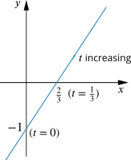
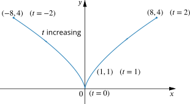
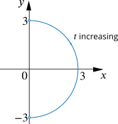

Take a look at triangle OPQ in this diagram. Explain why P has the coordinates given.
Imagine we move P by increasing ∠QOP, whilst keeping PQ perpendicular to the x-axis. How could P move if
the length of OP is fixed but Q can move along the x-axis as required?
Q remains fixed but the length of OP can change?
In each case, can you express the coordinates of P in terms of ∠QOP ?
If the length of OP is fixed but Q can move along the x-axis, then as ∠QOP increases, P moves anticlockwise, tracing out an arc of a circle of radius 1, centre (0,0).
If we write ∠QOP=t then the locus of P has parametric equations
x=costandy=sint
What could the domain of t be in this case?
Note that we’ve shown the path that P traces out as ∠QOP increases to slightly less than π. What value will ∠QOP need to reach for P to move round a full circle?
If the length of OP can change but Q remains fixed at (12,0), then P will move up the line x=12 from the point (12,3√2) as ∠QOP increases.
If we write ∠QOP=t then can you explain why the locus of P has these parametric equations?
x=12andy=12tant
Approximately what range of values of t do you think would give the line segment shown?
What range of values for t would give us the whole line x=12?
Now try this
Sketch the curves or lines defined by the following parametric equations. Mark on your sketch any key values of t and the direction in which the curve is traced out as t increases.
x=2t and y=3t−1 for t∈ℝ.
x=t3 and y=t2 for −2≤t≤2.
x=3sint and y=3cost for 0<t<π.
For each curve, find a Cartesian equation (an equation that only involves x and y).
Although you may be able to find a Cartesian equation very easily, it is worth trying to sketch using the parametric equations as this may help with more complicated examples.
Both x and y vary linearly with t, so we might expect a straight-line graph. What else do we need to know?
As t increases, both x and y increase because they both have a positive coefficient for t. What does this tell us about the direction in which the line is traced out as t increases?
We can now think about some important points. For example, when t=0 then x=0 and y=−1. What is t when y=0?
Finally, note that y increases at 32 times the rate at which x increases.

By eliminating t from the two equations, we can obtain Cartesian equations, such as y=32x−1 or 3x−2y−2=0.
Note that when t=0, x=0 and y=0 so the curve passes through the origin.
When t is negative and increasing x is negative and increasing and y is positive but decreasing. When t is positive and increasing both x and y are positive and increasing. Thus the graph is traced out from left to right and y≥0.
Note too that replacing t with −t gives the same value of y. What effect does it have on x? What does this tell us about the curve?
Thinking about how rapidly x and y change as t increases, note that dydt is linear, but dxdt is quadratic. Therefore as t increases from 0, x increases progressively faster compared to y. What about when t is negative but increasing?

Finally we can substitute for t to obtain the Cartesian equation y3=x2 or y=x23, where −8≤x≤8.
Again, let’s start by thinking how x and y vary with t.
As t increases from 0 to π we use our knowledge of trigonometric functions to note that x increases from 0 to 3and back again (with x=3 when t=π2). The value of x changes most quickly when t is close to 0 or π.
As t increases from 0 to π, y decreases from 3 to −3. When t=π2, y=0 and y is changing most rapidly.

The sketch suggests that the curve could be the part of the circle with Cartesian equation x2+y2=9 for which 0<x≤3 and −3<y<3. How can we eliminate t from the parametric equations to obtain x2+y2=9?
Can you suggest parametric equations for the same curve, but traced out anticlockwise instead? What if you wanted to trace out the full circle?
The parametric equations of a curve tell us about its shape by showing how x and y vary as the parameter varies. The equations may also tell us about the symmetry of the curve.
Just as there can be several Cartesian equations for the same curve, parametric equations are not unique. It may be more convenient to work with some than others, so it is worth exploring different parametrizations of the same curve.